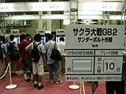
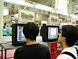
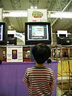
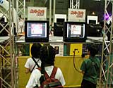

| #5 ゲームボーイカラーのライセンシータイトルをすべて紹介! |
ゲームボーイカラーのライセンシータイトルをすべて紹介! page1 ・・・ page2 |
| ● サクラ大戦GB2 サンダーボルト作戦 セガ |
|
 あの人気ソフト『サクラ大戦』の最新作が、再びゲームボーイに登場します。今回は、プレイヤー自らが帝国華撃団の一員となり、今までの『サクラ』とはちょっと違った冒険が楽しめるそうです。ゲームボーイカラーの中でも、並んでいるプレイヤーが多かったこのコーナー。プレイしていく人について、スタッフの方に聞いてみたところ、「年齢層は、他のゲームに比べると比較的高めですね。見たところ、その中でサクラファンは6割という感じでしょうか。もちろん、初めての方も楽しめる作りになっていますよ」とのことでした。幅広いユーザーに楽しめる『サクラ』に注目! |
| ● エストポリス伝記 〜よみがえる伝説〜 タイトー |
|
 スーパーファミコンで発売された『エストポリス』シリーズ最新作が、装いも新たに登場します。心温まる愛と感動のストーリーは今作も健在。パーティキャラクターは総勢12名、最大9名での戦闘が行えます。パーティの並びで戦略が変化する新システムが搭載され、ゲームの楽しさをひきたてています。 「スタンダードなRPGなんですが、今作はよりラブロマンス色が強くなっていると言えます。遊びやすさにも注目してください」とスタッフの方は語ってくれました。 |
| ● きかんしゃトーマス ソドーとうのなかまたち タム |
|
 舞台はイギリスにある架空の島、ソドー島。主人公トーマスを始め、蒸気機関車、客車、ディーゼル車、バス、ヘリコプターなど、おなじみの乗り物たちが登場し、愉快な冒険の旅が始まります。 「トーマスがゲームに初登場しました! アクションゲームですが、小さい子も遊べるように、操作性にも気をつけました。実際、本日プレイしている方も小さい子が多く、戸惑わずにプレイしてもらっているので、こちらとしても満足しています」とスタッフの方は語ってくれました。 |
| ● ゲームボーイウォーズ３ ハドソン |
|
わかりやすい操作方法とコミカルな絵柄で誰でも手軽に遊べる、あの人気ウォーシミュレーションが再び登場です。今作は、初心者から上級者向けのモードが追加され、さらにたくさんのマップが収録されています。このブースには『ゲームボーイウォーズ』のファンが多く詰めかけていて、1日に5〜6回現れてプレイしているファンもいるとのこと。これにはさすがにスタッフの方も驚いておりました。 「今作は、モバイル対応というところにも注目してください。単にマップをダウンロードできるだけでなく、ゲーム中でもモバイルに対応したイベントが起こります」と、スタッフの方はモバイル面について一押ししてくれました。 |
| ● Doki × Dokiさせて!! ビクターインタラクティブ |
|
 プレイヤーは、超人気アイドルグループ“アストロボンバー”のメンバーの紅一点となり、メンバーと共に１年後のドームコンサートを目指すという、アイドル恋愛ゲームです。5人の少年と1人の少女が巻き起こす業界ストーリー。コンサートを成功させ、夢のアイドルライフを満喫しましょう。スタッフの方に、プレイヤー層について聞いてみたところ、「月刊なかよしの人気漫画がゲーム化されたということで、やはり来る方は、小中学生の女の子が圧倒的ですね」と話してくれました。やはり原作のファンだという人が多いみたいですね。 |
ゲームボーイカラーのライセンシータイトルをすべて紹介! page1 ・・・ page2 |
| 前のレポートへ | 次のレポートへ |
|
|